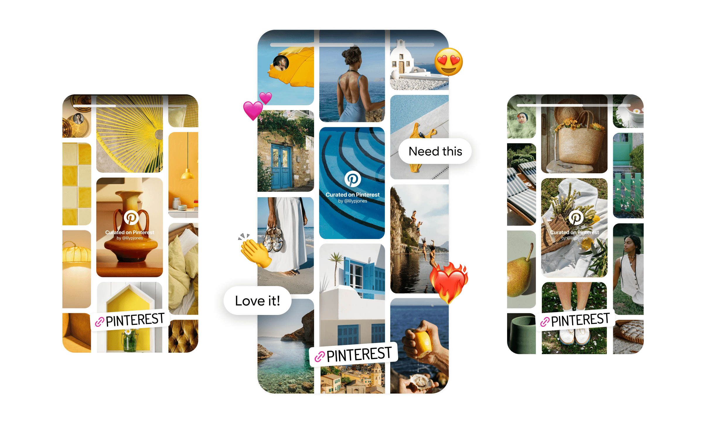
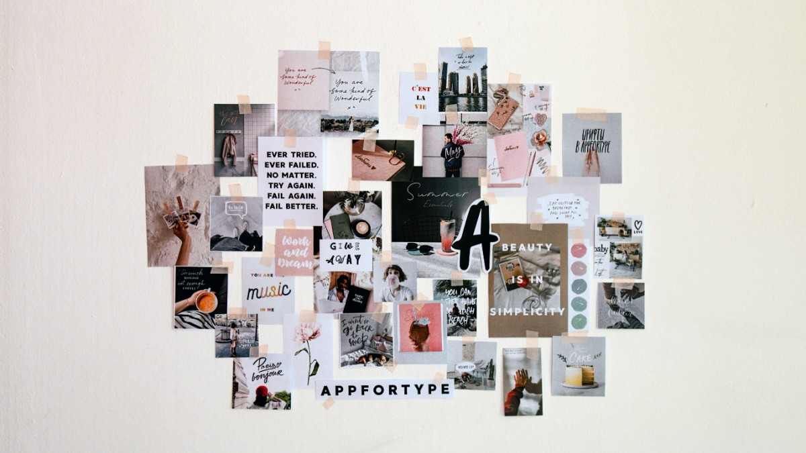

Create a public Pinterest board named “Beagle Board”. User found a help page that was focused on the app. We discovered there had to be an account for the user to conduct this task. User found the create board page. 2:35. The user was very confused and clicked on quite a few different pages before discovering an account was necessary to create a board.

Edit the board to be a private board, and invite one collaborator to the board. The user took roughly 30 seconds or so. This was easier to find since the board was created and the user was within the board. They were able to click edit and use a simple check to make the board private. Inviting a collaborator was also simple in that they were able to click an invite button next to a user. The user did not make any errors.
Search for a picture of a tri colored beagle. The user took about 40 seconds. The search bar was large at the top of the screen and was easy to locate and use.
The user was meant to make a collage using pictures from the board they had created. The outcome was the user taking About a 1:45. Finding how to make a collage was a little harder. The user was able to find that fairly easy since it was contained with creating a board and figure out how to create a collage from the pins in the created board. Saving the board was a little harder as she commented. She figured it out, gave it a name, and saved it successfully. There was a bit of confusion first with finding how to create a collage. The knowledge from creating a board helped with this task. There was also confusion with how to get the pins into the collage. The system was fairly intuitive and helpful so the user was easily able to figure it out.
The user was to search for beagle pictures on Pinterest and save some to the Beagle Pinterest Board. They Clicked multiple options and found love and unlove. Attempted to share but did not find save option. Finally found the save option and was unable to specify which board to save to. Saved the pins to the profile. Finally found the popup for saving it to a specific profile. Also had to edit the specific pin once its in the profile. Frustrated. Found the option to add ideas to the board through the specific board page. Found this much easier than searching and adding to the board. 1:50
Do I think that I would like to use this system frequently?
3 (had fun with the collage. Not something he would use. A little annoying at time especially adding to board)
Did I find the system unnecessarily complex?
4 (It tries to be simple and makes things annoying in the process)
Did I think the system was easy to use?
3 (Finding things was easy)
Did I think there was too much inconsistency in this system?
4 (It was inconsistent on board interactivity and inputs.)
Here is your total calculated SUS score.
1. I think that I would like to use this system frequently.
2. I found the system unnecessarily complex.
3. I thought the system was easy to use.
4. I think that I would need the support of a technical person to be able to use this system.
5. I found the various functions in this system were well integrated.
6. I thought there was too much inconsistency in this system.
7. I would imagine that most people would learn to use this system very quickly.
8. I found the system very cumbersome to use.
9. I felt very confident using the system.
10. I needed to learn a lot of things before I could get going with this system.